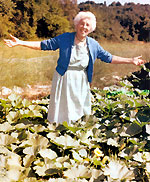

COURTESY GARDENWORKS
After you have mulched for a few years, your soil will become so rich from rotting vegetable matter that you can plant much more closely than one dares to in the old-fashioned way of gardening.